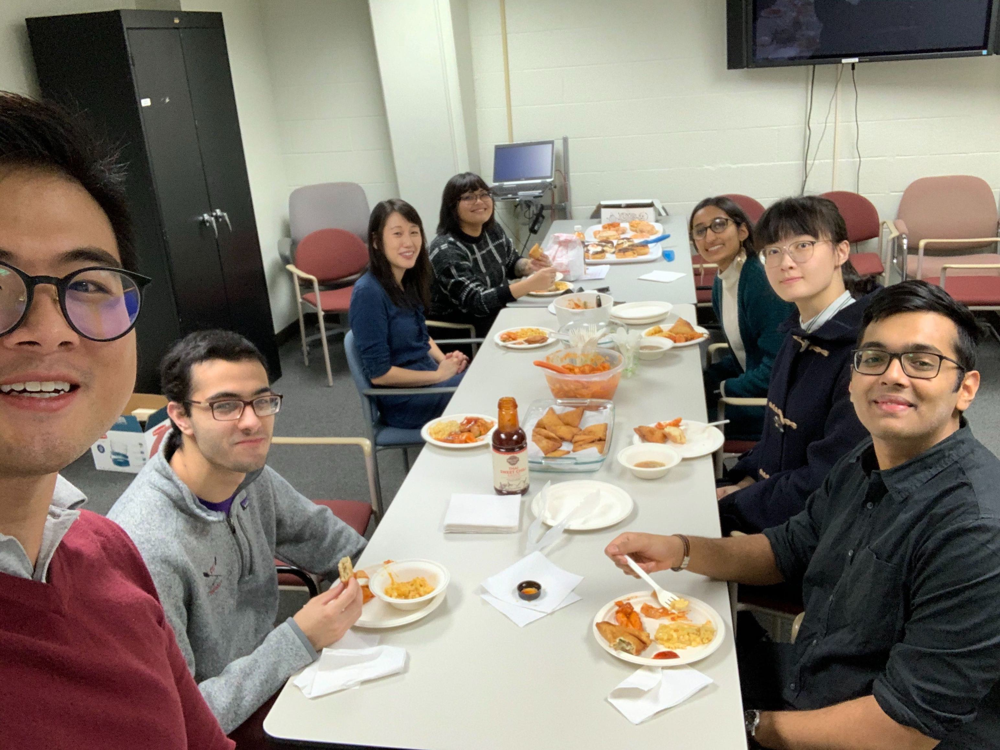

1st Jun 2020 Master Graduate Got a Master's Degree in Computer Science from University at Buffalo. GPA: 3.552/4
27th Nov 2019 Web Developer Start working at University at Buffalo, Division of Behavioral Medicine as a Web developer, sometimes also help developing desk applications. 
1st Feb 2019 Bachelor Graduate Got a Bachelor's Degree in Computer Science from University at Buffalo. GPA: 3.575/4. Magna Cum Laude, Yeah!
1st Aug 2015 Transfer to University at Buffalo Transfer to University at Buffalo, United States, from Liaoning University, China.
7th Jun 2013 Enter Liaoning University Took China College Entrance Exam, got 586/750 poins. Missed the first choice China Medical University with 2 points. :(
1st Sep 2010 Enter Anshan No.1 Senior Middle School Meet with Yucen Han, Dongxu Zuo, Xiaoyi Ling, Xinyu Zhang, Xiaoqi Xu, and Renyuan Zhang, became good friends.
1st Sep 2006 Enter Anshan Huayu Foreign Language Experiment School Meet with Chang Li, Zheming Zhang, Linru Wang, and Jinwen Zhang, set up SOS Comic Club.
1st Sep 2001 Enter Anshan Shengli Elementary School Start watching Harry Potter Series at 1st grade, and watching NARUTO at 5th grade.
11st Dec 1995 Born Born in Liaoning, Anshan. My grandma named me Yichen, Yi means relaxed and Chen means planet. They hope me can be a relaxed and happy small planet in the sky.